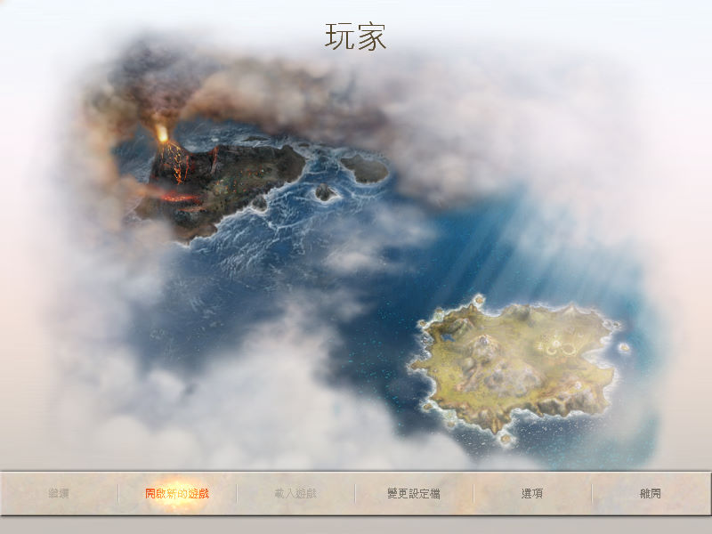
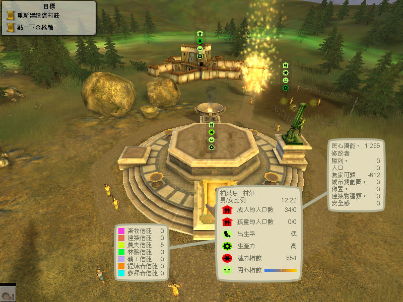
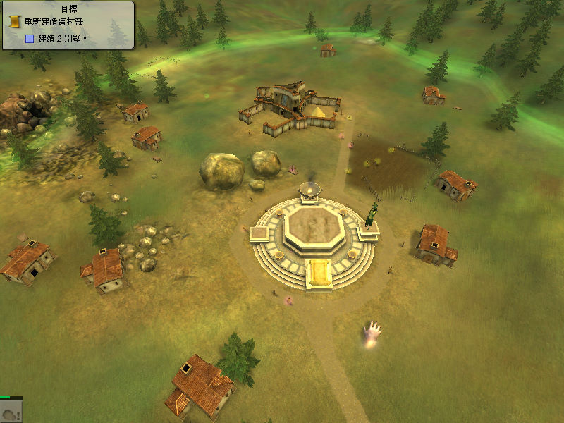

名稱：善與惡2／黑與白2 (Black & White 2，中文／英文版)
簡介：Lionhead 2005年出品的上帝模擬遊戲，兼具即時戰略的元素，由EA代理發行。2006年
推出「眾神之戰／諸神之戰（Battle of the Gods）」資料片 [待補]。



保護：主程式為光碟SafeDisc 4.00+序號（DXFP-JD46-7GJY-Z8MN-WDEV）
資料片為光碟SafeDisc 4.60+序號（BNB3-BB8Z-8ERJ-98P2-6VZ7）
備註：眾神之戰資料片無繁中版。
備註：眾神之戰資料片安裝前，要先到控制台變更語言為英語（美國），在中文系統下是安
裝不起來的。
備註：英文版更新檔無法作用於繁中版。
備註：VirtualBox無法執行，虛擬機請使用VMware。
檔案：Black-White-2_Patch_Win_EN_Patch-v11.rar = 英文主程式1.1更新檔
Black-White-2_Patch_Win_EN_Patch-v12.rar = 英文主程式1.2更新檔
nocd12.rar = 英文主程式1.2免光碟檔（繁中1.0可使用）
nocdx.rar = 資料片免光碟檔